> # Methods of assigning/storing values
> x <- 5
> y = 6
> z <- "GSK"2.1 Ownership of R
R is free and open source under a GPL-2 license. This means that you can download it at home and, if you want, see how it has been written. It also means that you get a “ABSOLUTELY NO WARRANTY” message every time you load up R. But don’t let that put you off!
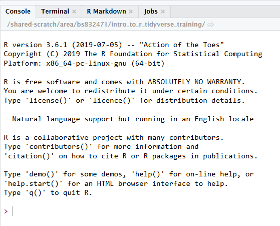
2.1.1 A Note on Using R for Regulatory Work
Despite common opinion, there is no reason why R cannot be used for regulatory work. It is true that the FDA require the use SAS transport files for a submission, however these are not a proprietary format and you can produce them using R. And even this requirement could disappear in the future in favour of a more open format such as XML.
R is widely used at the FDA (there are several presentations available online from people at the FDA stating this). The R Foundation have also released an official document outlining their understanding of how R can be used in a regulated clinical trial environment: https://www.r-project.org/doc/R-FDA.pdf. However, R is still not commonly used for submission work, and hence for clinical analysis.
Whenever discussing the use of R in a regulatory environment always remember that there is a clear distinction between: the base R language, that has been built up over several years and widely tested by the R community; and the publically available R packages, which anyone can develop (and may, or may not, do what they are supposed to).
To learn more about how the industry is addressing this question, it is worth visiting the “R Validation Hub”, www.pharmar.org. The Hub is an industry-wide effort to agree upon some basic principles regarding the use of R in a regulatory setting.
The R Validation Hub have produced a white paper entitled, “A Risk-based Approach for Assessing R package Accuracy within a Validated Infrastructure”.
2.2 Working in RStudio
Let’s start off by watching a short video from RStudio showcasing their IDE. Don’t worry, there will be a deep-dive into each part that the presenter goes over and even more!
Notice how the presenter covered the four different panes of RStudio. We are going to follow almost the same method.
- Explore the Console by doing some Simple Arithmetic
- Write our first R script by using the Scripting Editor.
- Discuss objects while looking at the Environment Pane
- Look at a function and its parameters in the Help Tab.
There are more Tabs within each Pane. We will cover the remaining tabs at the end of this Chapter using our Script to do another walkthrough. The RStudio IDE is powerful, but can be overwhelming so start small and expand your abilities as you code.
2.3 Simple arithmetic using the Console
Like most scripting languages R provides us with a console for direct interaction. In other words we can directly ask R questions without the need for scripts. This course contains many simple, “one line” examples that we will execute directly in the console.
Let’s enter a few R statements into the Console and use the return key to execute it. Results are displayed right under the statement entered.
- 3 + 4
- 3 - 4
- 5 * 8
Please, type the above statements into the console, pressing the return key after each one and see that it matches up with the below image. Take a note on how R indicates that something is an output.
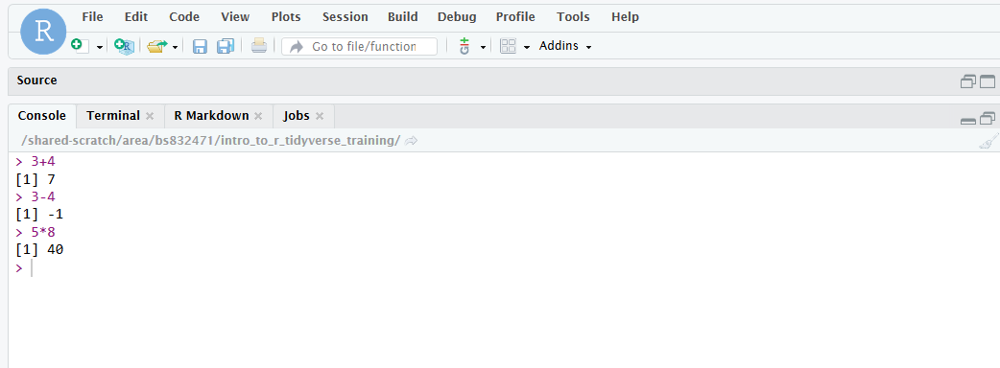
2.4 Creating Objects
So far we have simply printed output to the console. We can also store any objects and use them later on. The convention in the R community is to use <- to assign and store objects, however = may also be used.
Objects are created in our global environment, similar to the ‘work’ area in SAS. We can always see a list of created objects in the ‘Environment’ tab with a little information about their structure. Additionally, you can use the str function to learn more about an object’s structure, or simply type it’s name in the console to print it out.
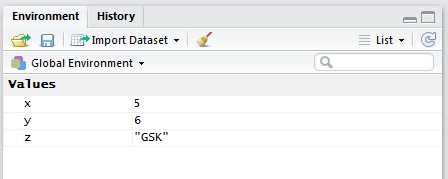
To produce a list of these objects in the console we can call either of the in-built functions ls() or objects()
> # Things I have created
> objects() [1] "act" "act_full" "act_long" "dm"
[5] "pandoc_dir" "params" "quarto_bin_path" "sl"
[9] "theoph" "vs" "x" "y"
[13] "z" The broom symbol in the environments tab allows us to delete all objects that we have created. Alternatively we can do so programatically.
> # Remove all objects from workspace
> rm(list=ls())2.4.1 Naming Conventions
At this point it is worth stressing that R is case sensitive and so “x” and “X” are not the same! Names can be as long as we like and use any combination of upper case, lower case, numerics, underscores and dots. However, they may not start with a number or underscore. Today, most R users either use camelCase or snake_case to separate out words when naming objects. At GSK we have opted to use the tidyverse style guide, which advocates snake_case.
2.4.2 Using Objects
To use the objects we just reference them in exactly the same way that we created them.
> # Use values that have been previously stored
> x + y[1] 11> # Now let's do something silly to get a really helpful error message!
> x + zError in `x + z`:
! non-numeric argument to binary operatorData types cannot usually be combined so it is important to recognise the basic types of data (and error messages) that exist in R.
2.5 Our first R Script
Let’s create our first R script, by navigating to the top-left corner. First, we click the green plus sign and select R Script. There are several other ways to create a new script, one of which is Crtl+Shift+N, or using File > New File > R Script.
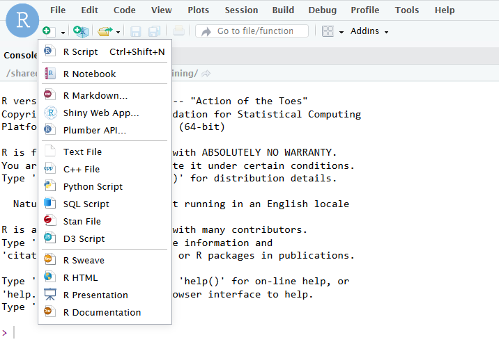
2.5.1 The Script Editor
The script editor is very much like the SAS script editor, or any other script editor for that matter. Syntax highlighting improves readability and there is a first line layer of code recognition which can identify common scripting errors such as a bracket or quotation mark that hasn’t been opened/closed.

Other default features of the editor include automatic indentation, closing of brackets, color-coded brackets, and quotations and auto-completion of code. All of these features can be modified or switched off via the
Code menu: Tools > Global Options > Code.
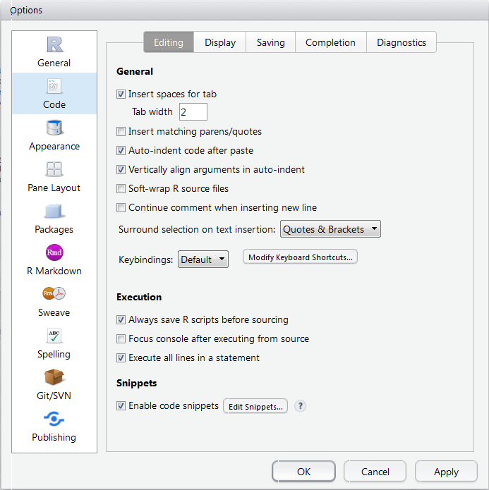
To execute the code that we write in the script editor we can either click on the Run button at the top of the window or use Ctrl + Enter on the keyboard. By default, code is executed line by line depending on where the cursor is located. To run sections of code (or the entire script) we must highlight the code that we want to run. Alternatively, we can run the entire script by saving and clicking the Source button.
Now, let’s work on our first script. First, let’s save our Unititled file as my_first_R_script.R in the folder /Home/gsk_R_training
In this brief walk through we will create and summarise some data. We will learn a lot more about what exactly is happening later in the course.
Now, let’s create some dummy data for weight and height. Note that the list of 5 numbers is wrapped in parentheses with a c in front. This is how R creates a “vector” (similar to a column of data). We have just created two such objects called weight and height.
> weight <- c(70.9, 87.2, 90.8, 68.1, 72.6)
> height <- c(170, 185, 178, 175, 180)Let’s find the bmi of the 5 subjects that we created. Notice how the output is reported back to us.
> weight/ (height / 100)^2[1] 24.53287 25.47845 28.65800 22.23673 22.40741Now, lets find the mean of the height variable, by using the function mean. After you type the word mean in your script, hit tab and see what appears. If you press F1 it wil bring up a help page for the mean function. You can also type ?mean.
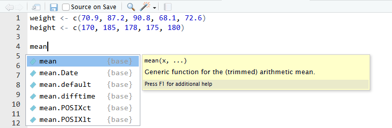
> mean(height)[1] 177.6In our R script, lets save the mean(height) as mean_hgt and weight/ (height / 100)^2 as bmi.
> mean_hgt <- mean(height)
> bmi <- weight/ (height / 100)^2Where did they go? There is no longer any output in the console! Remember, you can view objects in the Environment tab in the upper right hand window of Rstudio.
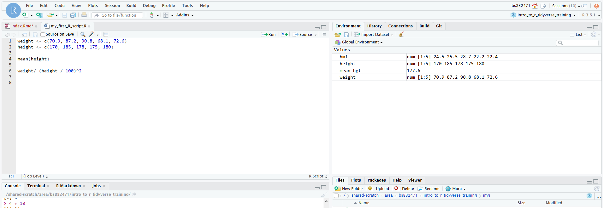
2.5.2 Functions and Help
R has many built-in functions to aid you in your work, typically the R community refers to these as base-R functions. Where a base-R function is lacking or not available, then enterprising folks have used R’s powerful package building process to supplement base-R functions. We will cover packages very soon, specifically the tidyverse package. Now lets take another look at our mean function again. You can type ?mean to bring up documentation and examples of how to use the mean function or tab and f1 right you type the function.
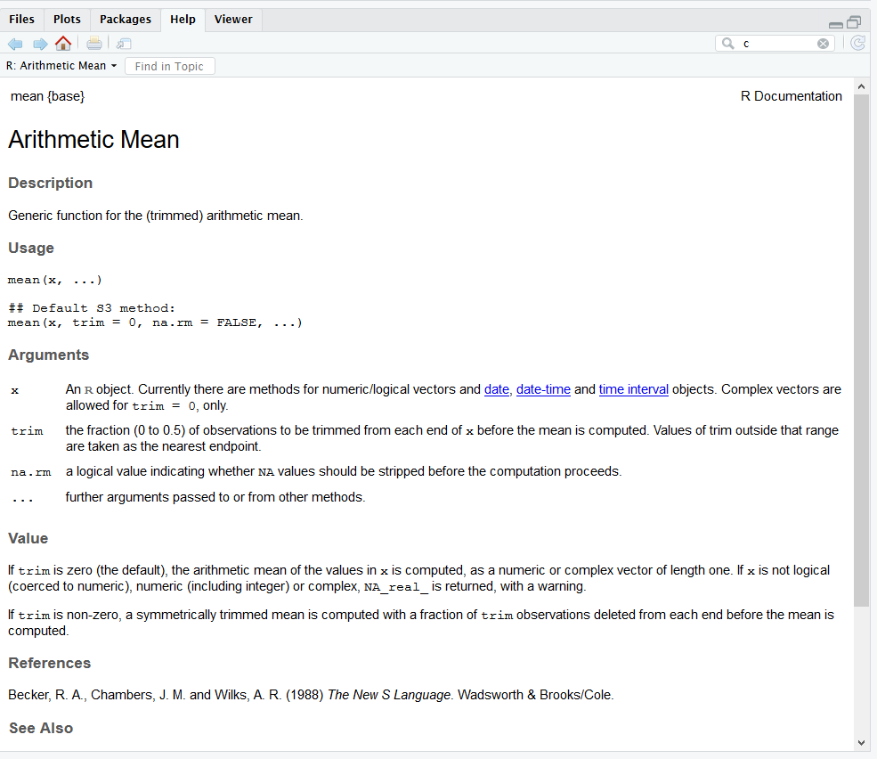
If you scroll to the bottom of the help page, you can see an example. Try to run the example in your console by highligting the text and clicking ctrl+enter . What is the value of xm?
2.5.3 Clearing History, Console, Environment
The console can be cleared by choosing the menu item Edit -> Clear Console. Else you can use the keyboard shortcut Ctrl + L.
You can also clear the console by clicking the broom.
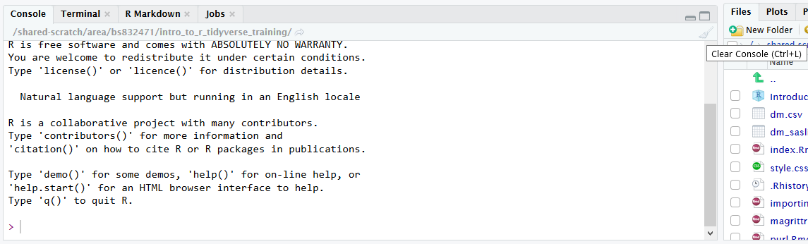
To clear the Environment Variables you can click another broom. It is a good programming practice to clear your environmental variables after you are finish writing your script and then rerun it.
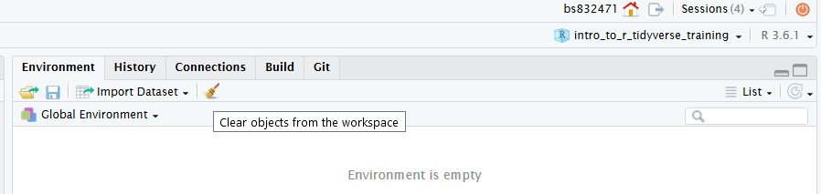
2.5.4 Restarting or Terminating our Session
Sometimes it makes sense to restart with a clean slate (eg to test code). The current R session can be restarted by choosing the menu item Session -> Restart R. This removes all objects and unloads all packages.
Note that closing the browser does not terminate the R session. To completely terminate the session you should use the orange ‘power button’ icon in the top right hand part of the window.
It is possible to save objects (eg large data sets that take a long time to import) using the save function but this is not covered on this course.
2.5.5 A Paneful Tour
The interface of RStudio consists of 4 main panes and sub-panes within those main panes
Additional panes can appear for additional functionality, e.g. the R Markdown or Git pane. Note, the Editor pane is only visible if at least one source code file is open.
Editorpane for editing source code files like R scripts or R Markdown files (top left part in the screenshot)Consolepane for running R code interactivelyTerminalpane for using a terminal within RStudioJobspane for running R jobsEnvironmentpane displaying objects created in a R sessionHistorypane displaying the statement historyConnectionspane for connections to databasesFilespane for browsing and handling files/directoriesPlotspane displaying plotsPackagespane for installing and updating R packagesHelppane displaying R help pagesViewerpane displaying rendered R Markdown documents and Shiny apps
As you work through this training keep in mind that this comes with accompanying script that contains all the code and exercise solutions: This script can be found at /home/gsk_R_training/tidyverse.R.
2.6 Packages
An R package is just a collection of R objects. The majority of these objects are functions but may also be data or other forms of object.
R is essentially a collection of “packages”. An R package is what other programming languages usually call a “library” (or “module” in SAS). In other words it is a bundle of code that implements some functionality that extends the language. This course is based around one package in particular, called “tidyverse” (which is itself a collection of other packages).
The R installation itself is actually just a collection of around 30 packages, several of which are automatically loaded when you start an R session:
> # R packages loaded in my session:
> search() [1] ".GlobalEnv" "package:haven" "package:lubridate"
[4] "package:forcats" "package:stringr" "package:dplyr"
[7] "package:purrr" "package:readr" "package:tidyr"
[10] "package:tibble" "package:ggplot2" "package:tidyverse"
[13] "package:stats" "package:graphics" "package:grDevices"
[16] "package:utils" "package:datasets" "package:methods"
[19] "Autoloads" "package:base" The vast majority of R packages contain utility functions for performing data manipulation or analysis, or for drawing graphics. In many cases they also come packed with examples and even dummy data sets to use.
The 30 packages that make up the base R installation are maintained by the R Core Team. However there are also more than 10,000 publically available R packages available on CRAN (The Comprehensive R Archive Network).
2.6.1 Loading Packages
Each time we start a new R session, only a handful of our installed packages are actually loaded.
> # These packages are currently loaded in my environment:
> search() [1] ".GlobalEnv" "package:haven" "package:lubridate"
[4] "package:forcats" "package:stringr" "package:dplyr"
[7] "package:purrr" "package:readr" "package:tidyr"
[10] "package:tibble" "package:ggplot2" "package:tidyverse"
[13] "package:stats" "package:graphics" "package:grDevices"
[16] "package:utils" "package:datasets" "package:methods"
[19] "Autoloads" "package:base" This course is based around the tidyverse, which is not loaded by default. We can either load the package manually by checking the box next to the named package in the packages menu or, as is more common when writing scripts, we can add a statement library(PACKAGENAME) to our script.
> # Run this or the course won't be much fun!
> library(tidyverse)It is good practice to place all of our library calls at the top of our script. Thus, when sharing a script anyone else can immediately see what they need to have installed in order to use the script.
The ‘tidyverse’ is an umbrella term/package for a number of other packages. Calling library(tidyverse) actually loads several useful packages including readr, dplyr, tidyr, stringr, forcats and ggplot2. This is a great short-hand when working interactively but for formal code development it is best practice to load the components that you actually need individually:
> library(readr)
> library(dplyr)
> library(tidyr)
> # etc.We will need to install the required packages ourselves. There are a few ways to do so but the simplest is to use the Packages tab in RStudio. To install a package we click on the Packages tab and then click on the Install icon.
The Install icon gives us options to install locally, or from repositories such as CRAN. We simply type the package name and click Install. Always leave the ‘dependencies’ check-box checked as this also installs any other packages that your chosen package needs in order to work!
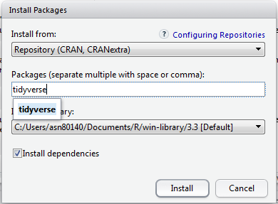